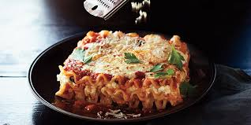

Lasagna

Description:
Lasagna is the name of one of the oldest and best-known pasta shapes. It is usually rectangular or ribbon shaped,
thicker than tagliatelle, made from a dough based on flour and eggs, with numerous local variants.
Ingredients:
- 1 pound sweet Italian sausage
- 0.75 pound lean ground beef
- 0.5 cup minced onion
- 2 cloves garlic, crushed
- 1 (28 ounce) can crushed tomatoes
- 2 (6 ounce) cans tomato paste
- 2 (6.5 ounce) cans canned tomato sauce
- 0.5 cup water
- 2 tablespoons white sugar
- 1 teaspoons dried basil leaves
- 1 teaspoon fennel seeds
- 1 teaspoon Italian seasoning
- 1 teaspoons salt, divided, or to taste
- 1 teaspoon ground black pepper
- 4 tablespoons chopped fresh parsley
- 12 lasagna noodles
- 16 ounces ricotta cheese
- 1 egg
- 1 pound mozzarella cheese, sliced
- 1 cup grated Parmesan cheese
Steps:
- First, spread an even layer of bolognese sauce over the base of an oven-proof dish.
- Then, place a single layer of pasta sheets on top. You may need to break up some of the sheets into smaller
pieces to ensure they fit.
- Next, spread over a layer of the white sauce (or béchamel) and repeat the process until both sauces are used
up.
like parmesan and cheddar).